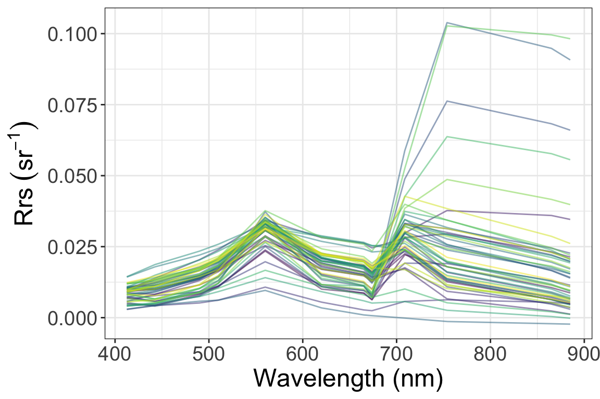
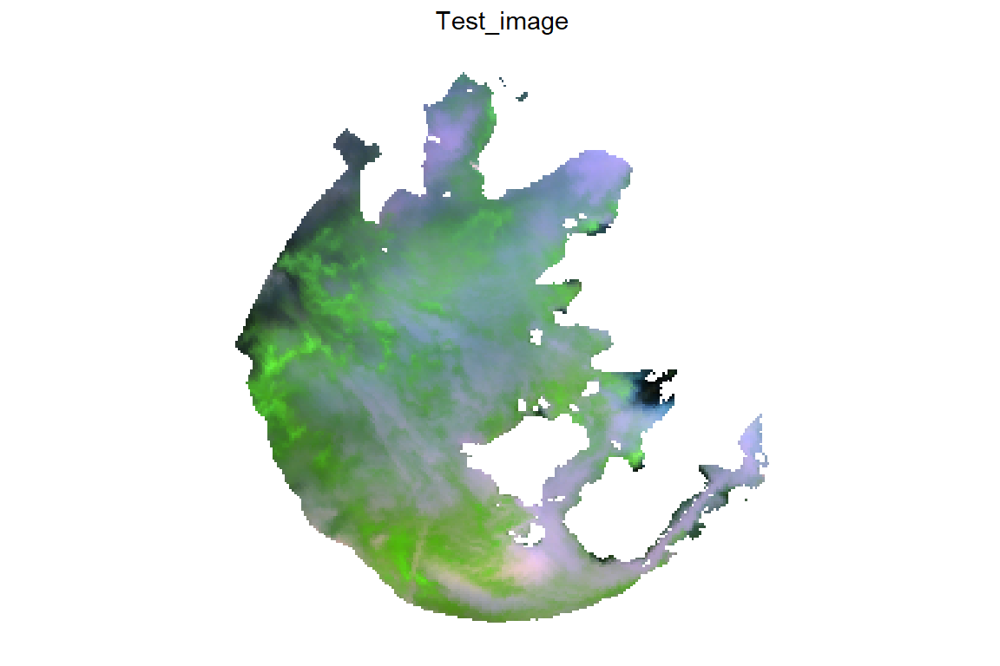
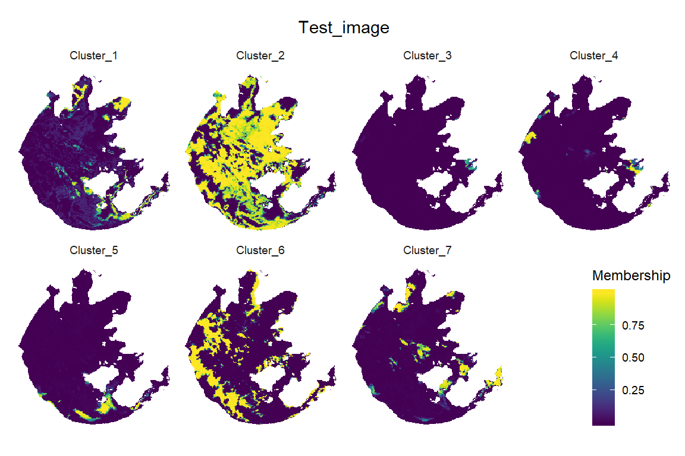
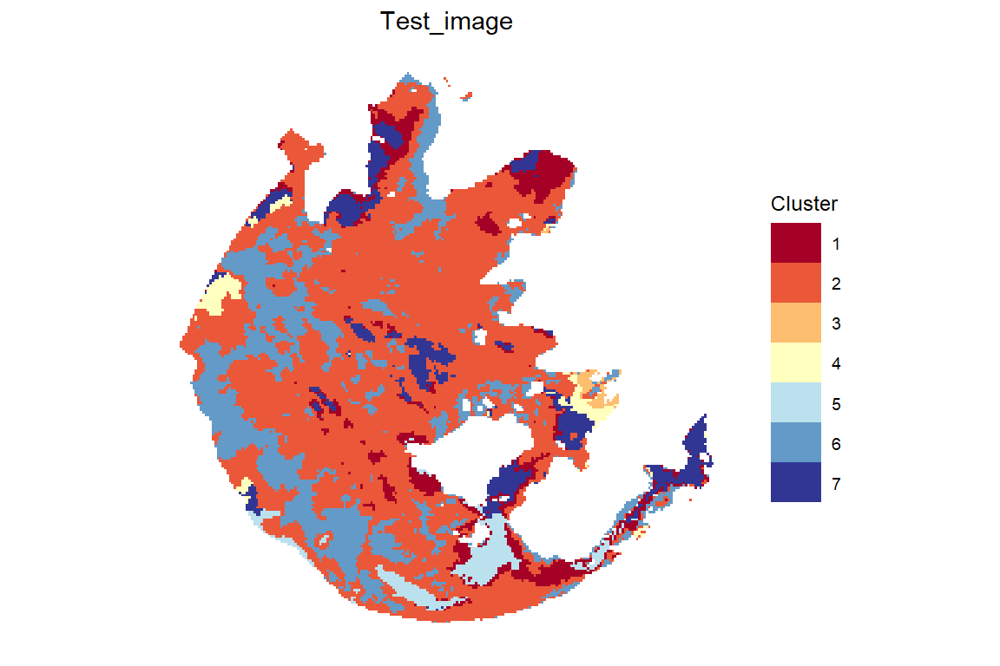
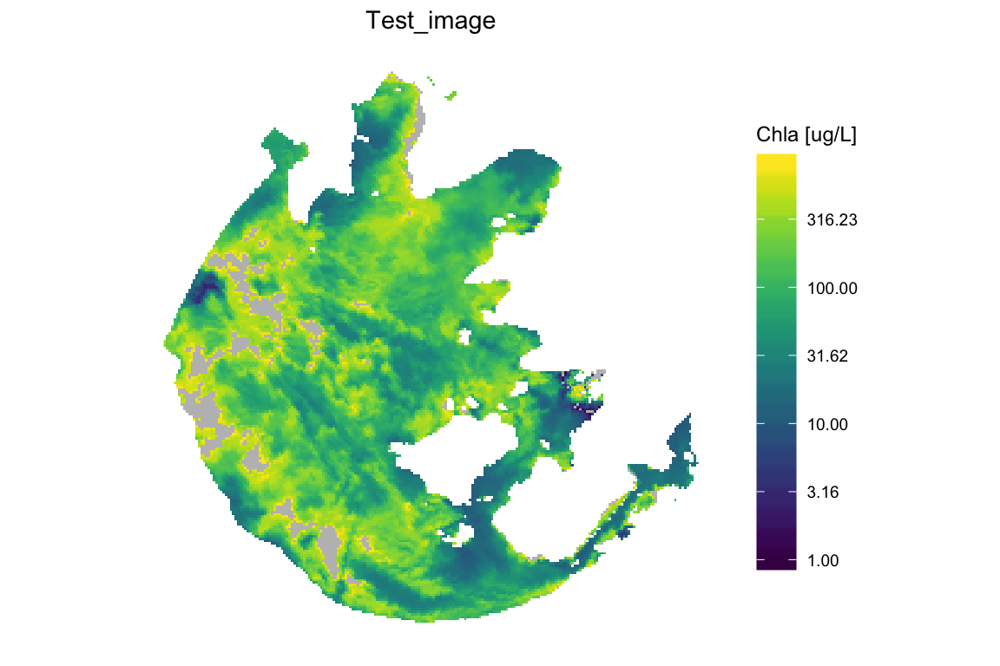

vignettes/Raster_Running_FCMm.Rmd
Raster_Running_FCMm.RmdDear users, the four vignettes of FCMm were provided in this package to demonstrate the usage and application to obtain the cluster number, to train the user-defined data set, to apply the default FCMm to new data (such as Chla concentration estimation), and the imagery data.
Here are the step-by-step demos:
This demo shows how to apply FCMm to raster data sets if users just want to run it for imagery application by the default cluster spectra and fuzzifier. The required data sets are OLCI_TH and Bi_clusters. The former is a dataset with atmospherically corrected OLCI rasters of inland waters that the AC method was demonstrated in Liu et al. (2015) (see more details about OLCI_TH by typing help(OLCI_TH)). The latter one is the seven water cluster spectra which trained by FCM-m method (see more details in Bi et al. (2019))
Note_1: Have to know that OLCI_TH is ONLY for the testing of FCMm in this package. Therefore, if you want to use this dataset to your research, you should contact us to ask for the permit at first via bishun1994@foxmail or liyunmei@njnu.edu.cn. I hope you can understand.
Note_2: we also need package tidyverse to string and data processing and package raster to process the raster data (important). This vignette also shows how to process images in R by raster or so.
Note_3: The section FCM running used the subset of default Rrs clusters. Please see the section One more thing in vignettes New_Data_Running_FCMm if have not known how to do it in that situation. I hope you have a good day.
The OLCI_TH is a RasterBrick of package raster. For running in FCMm, this RasterBrick should be converted as ImageDataframe so-called as imdf.
rm(list=ls())
library(FCMm)
library(tidyverse)
data("OLCI_TH")
data("Bi_clusters")
class(OLCI_TH)
#> [1] "RasterBrick"
#> attr(,"package")
#> [1] "raster"
# convert RasterBrick to imdf with NA value removed and xy coordinates recorded
imdf <- raster::as.data.frame(OLCI_TH, na.rm=T, xy=TRUE)
names(imdf)[c(-1,-2)] <- c(412.5,442.5,490,510,
560,620,665,673.75,
708.75,753.75,865,885)Function plot_spec_from_df suppports a quick look about the spectral dataframe. Just type help(plot_spec_from_df) to see more details.
Note: The input of plot_spec_from_df should be a matrix or data.frame with colnames that could be transformed into the numeric — as the x-axis of the plot. Since the return of plot_spec_from_df is a ggplot list, you could modify or add it for your purpose (such as add labs or themes).
set.seed(54321)
sample_n(imdf[,c(-1,-2)],50) %>%
plot_spec_from_df(.) +
labs(x='Wavelength (nm)',y=expression(Rrs~(sr^-1))) +
theme_bw() +
theme(legend.position='none', text=element_text(size=18))
A-ha! The performance of AC is not bad.
Function apply_to_image provides many parameters for users to decide the process for their desired results. You can see more details by typing help(apply_to_image).
Note: The process might take a long time which depends on your local machine.
generate_param <- function(wl){
w <- (wavelength.default %in% wl)
wavelength <- wavelength.default[w]
Rrs_clusters <- Rrs_clusters.default[,w]
# generate the required res
res <- list()
res$FD$wv <- wavelength
res$K <- nrow(Rrs_clusters)
res$res.FCM <- list(v=Rrs_clusters,m=1.36)
return(res)
}
res <- generate_param(c(413,443,490,510,560,620,665,674,709,754,865,885))
im_result <- apply_to_image(input=OLCI_TH, res=res, title.name="Test_image",
Chla_est=T, output_image=F)
summary(im_result)
#> Length Class Mode
#> input 791136 RasterBrick S4
#> res 3 -none- list
#> raster.memb 346458 RasterBrick S4
#> raster.cluster 49494 RasterLayer S4
#> p.memb 9 gg list
#> p.cluster 9 gg list
#> p.truecolor 9 gg list
#> p.Chla 9 gg list
#> imdf 14 data.frame list
#> imRrs.raw 12 data.frame list
#> imRrs.n 12 data.frame list
#> res.FCM 8 -none- list
#> res.Chla 11 data.frame listim_result list contains several result by apply_to_image:
raster objectapply_to_image
FCM.new result